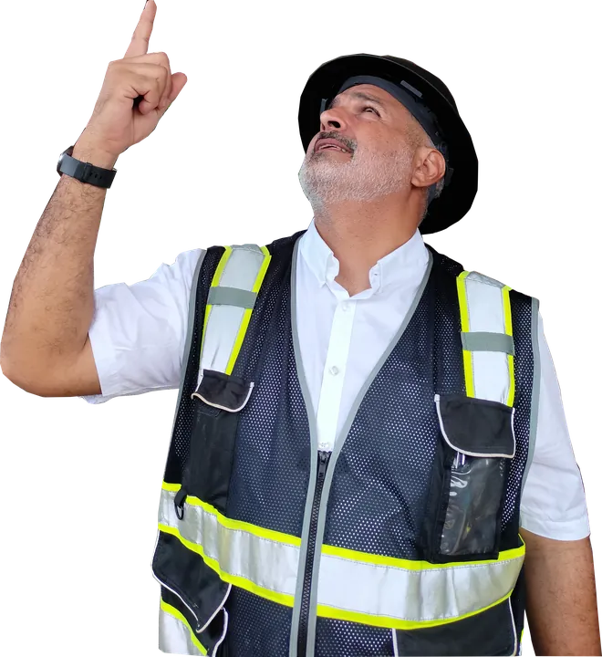
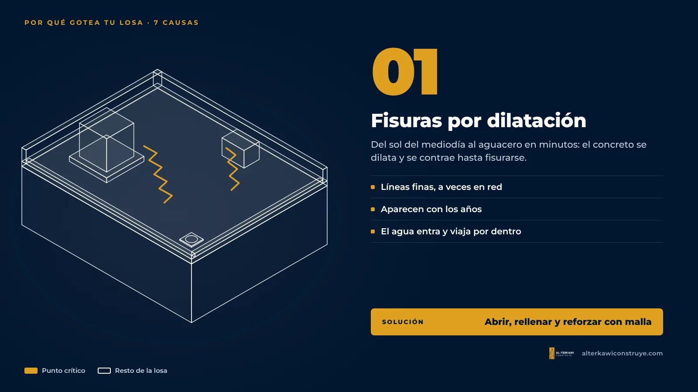
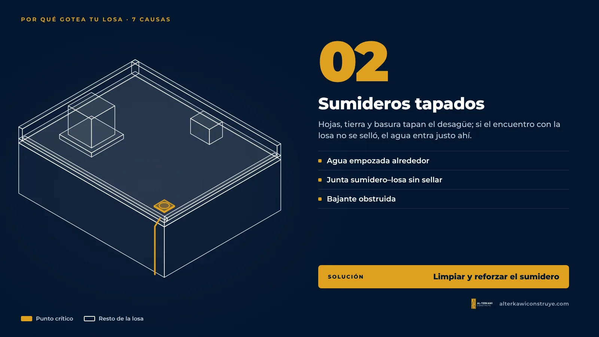
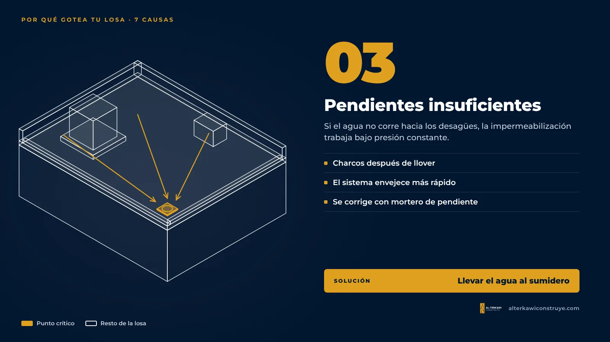
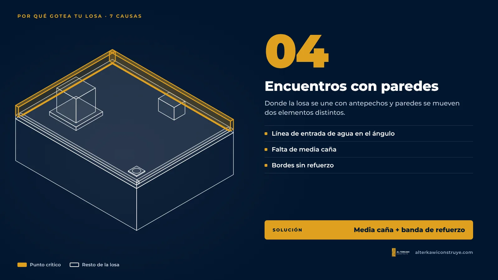
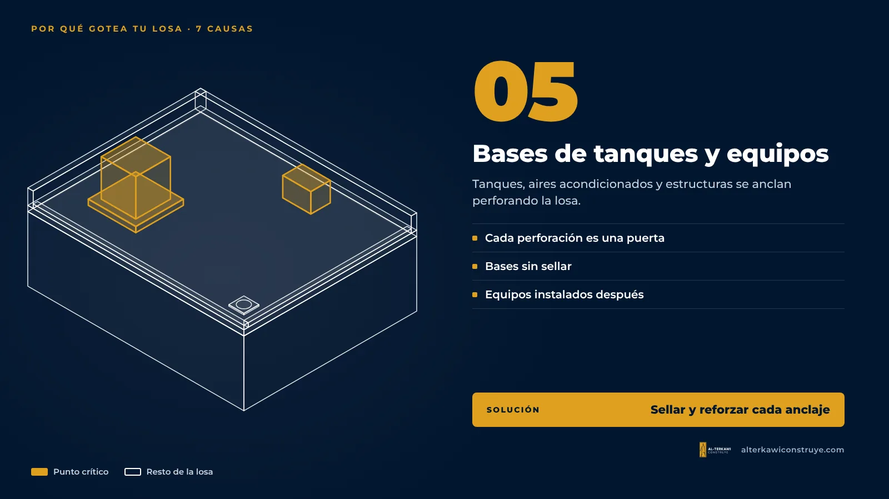
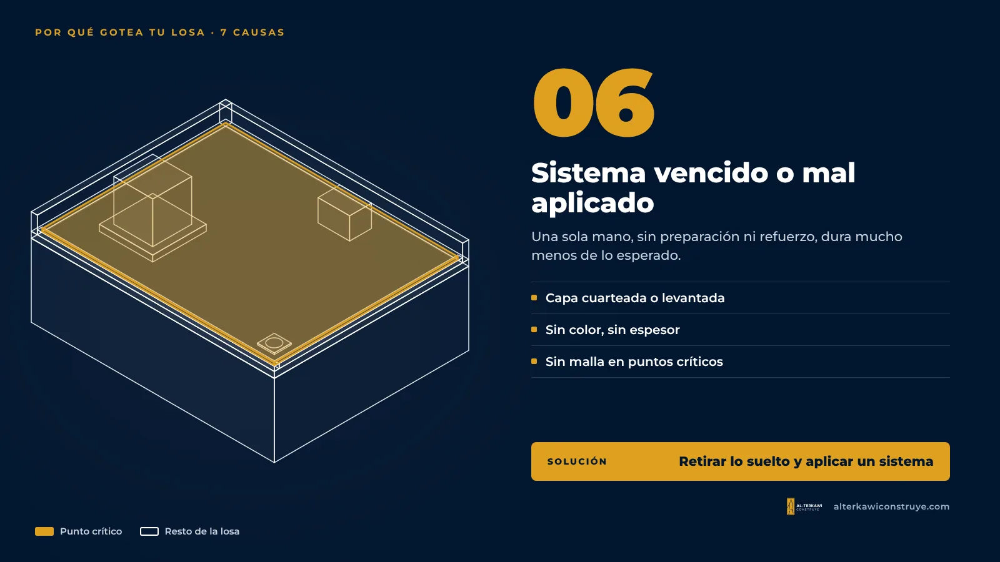
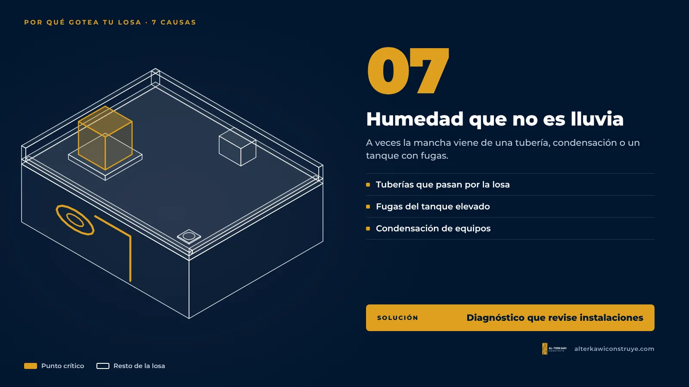

¿Por qué gotea tu losa? 7 causas que vemos en Guayaquil y cómo se resuelven

Una gotera casi nunca aparece donde está el problema. El agua entra por un punto de la losa, viaja por dentro del concreto o por encima del cielo raso y sale varios metros más allá. Por eso tantos arreglos fallan: se tapa la mancha, no la entrada. Antes de gastar en material, hay que encontrar la causa.
1. Fisuras por dilatación y contracción

En Guayaquil la losa pasa del sol fuerte del mediodía a un aguacero en minutos. Ese cambio de temperatura dilata y contrae el concreto, y con los años aparecen fisuras finas que el agua aprovecha. Se reconocen como líneas delgadas, a veces en forma de red.
2. Sumideros tapados o mal resueltos

Hojas, tierra y basura tapan el desagüe y el agua se queda empozada. Si además el encuentro entre el sumidero y la losa no se selló bien, el agua entra justo ahí. Es una de las causas más frecuentes y más baratas de corregir.
3. Pendientes insuficientes

Una losa debe tener pendiente hacia los desagües. Cuando el agua se queda en charcos después de llover, cualquier impermeabilización trabaja bajo presión constante y envejece más rápido.
4. Encuentros con paredes, antepechos y bordes

El ángulo donde la losa se une con una pared es un punto crítico: ahí se mueven dos elementos distintos. Si no se trató con una media caña y refuerzo, se abre una línea de entrada de agua.
5. Bases de tanques, equipos y estructuras

Tanques elevados, aires acondicionados, antenas y estructuras metálicas se anclan perforando la losa. Cada perforación sin sellar es una puerta para el agua.
6. Impermeabilización vencida o mal aplicada

Todo sistema tiene una vida útil. Un impermeabilizante líquido aplicado en una sola mano, sin preparar la superficie o sin refuerzo en puntos críticos, dura mucho menos de lo esperado. Se nota cuando la capa se ve cuarteada, levantada o sin color.
7. Humedad que no viene de la lluvia

A veces la mancha no es una gotera: puede ser una tubería que pasa por la losa, condensación o un tanque elevado con fugas. Por eso el diagnóstico revisa también las instalaciones.
¿Qué hacer?
- No pintes encima de la mancha: solo esconde el síntoma.
- Toma fotos de la mancha y de la losa por arriba después de llover.
- Pide un diagnóstico técnico que identifique la causa y mida el área real a tratar.
- Elige un sistema completo de fabricante, aplicado por capas y con garantía registrada.
Siga leyendo
¿Te ayudamos con tu proyecto?
En AL-TERKAWI CONSTRUYE te acompañamos desde el plano hasta la entrega de la obra.
¿Tu losa ya tiene manchas o goteras?
Te hacemos el diagnóstico con informe fotográfico y te proponemos la solución en tres niveles, con garantía registrada.